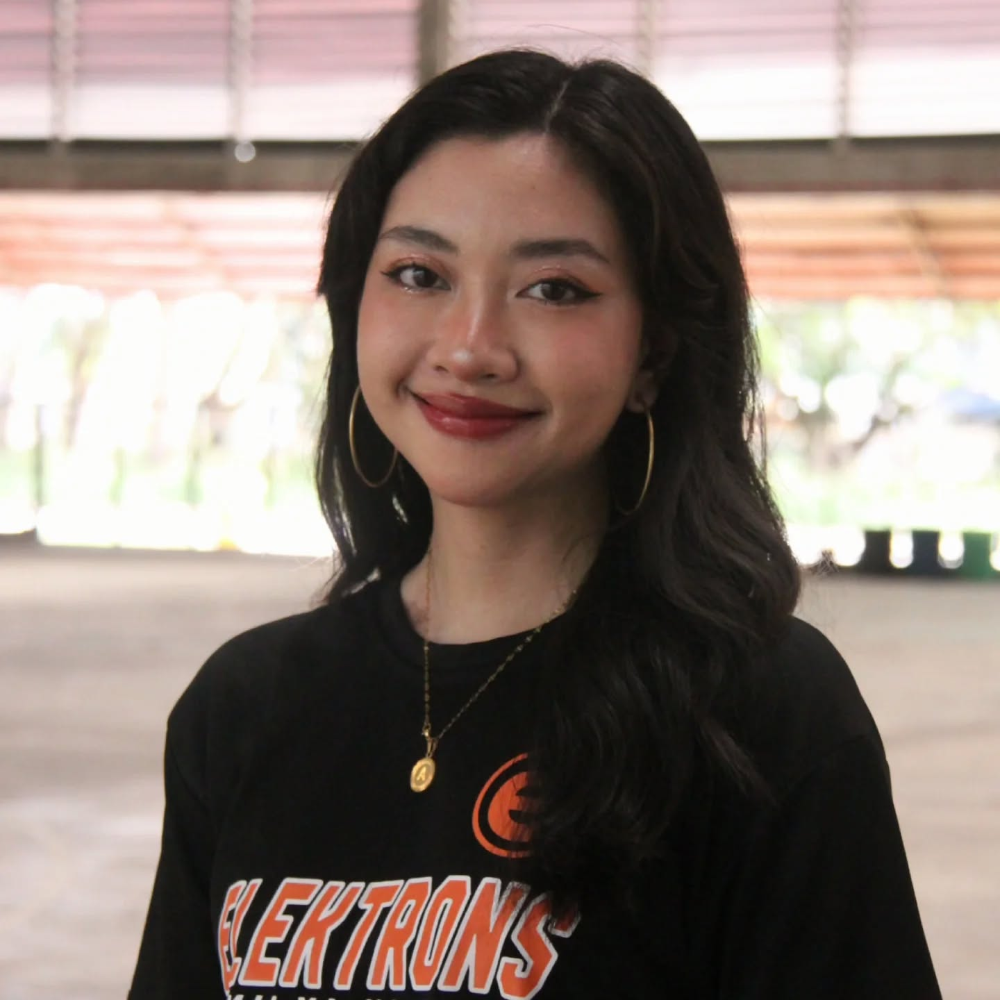
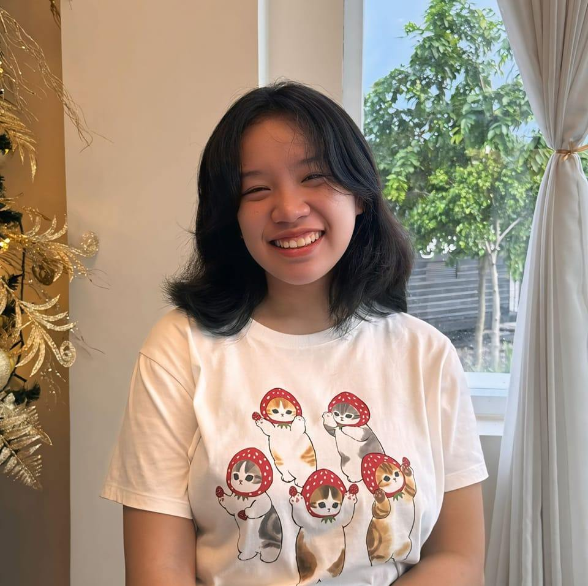

About UsHi there! We are Webbers, a team of three passionate Mobile Legends: Bang Bang players who have reached the Immortal rank.Beyond the battlefield, we are also Computer Science students exploring the world of web development together. As a team, we blend our love for gaming with our technical skills, constantly challenging ourselves to create and innovate. Whether it's dominating the Mid Lane or coding dynamic websites, we strive for excellence in everything we do. Join us on this journey as we balance strategy, creativity, and teamwork—both in-game and in our projects! |
Members
Andrea A. Laserna
Andrea is a 3rd-Yea r Computer Science student, who is currently taking Web Development along with her teammates.
Aside from Valorant, Stardew Valley, and Chess, she likes to play Mobile Legends : Bang Bang.
Her main hero is Guinevere and fights in the EXP Lane, but she aspires to be a good Lunox player in the Midlane as well.
She built the entire home page and contributed to the other pages in this website too.

Marinelle Joan U. Tambolero
Marinelle, or 'Nelle' for short, is a 2nd-Year Computer Science student who is also learning Web Programming.
Mobile Legends: Bang Bang is one of the few games she likes to play in her free time.
Her main heroes are Lunox and Floryn, and she mostly likes to play Mid Lane and Roam.
She mainly worked on the entire gallery page but also assisted with the making of other pages in this website.

Michaela F. Borces
Halloo! Michaela, who prefers to be called Mika, is a 2nd-year Computer Science Student who is also taking up Web Programming.
She played Mobile Legends: Bang Bang a long time ago and hasn't played it since.
Unfortunately, she does not have a main hero.
She mainly worked on the video links page and also helped with the other parts of the website.